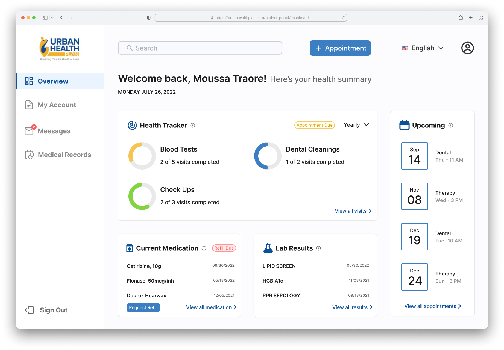
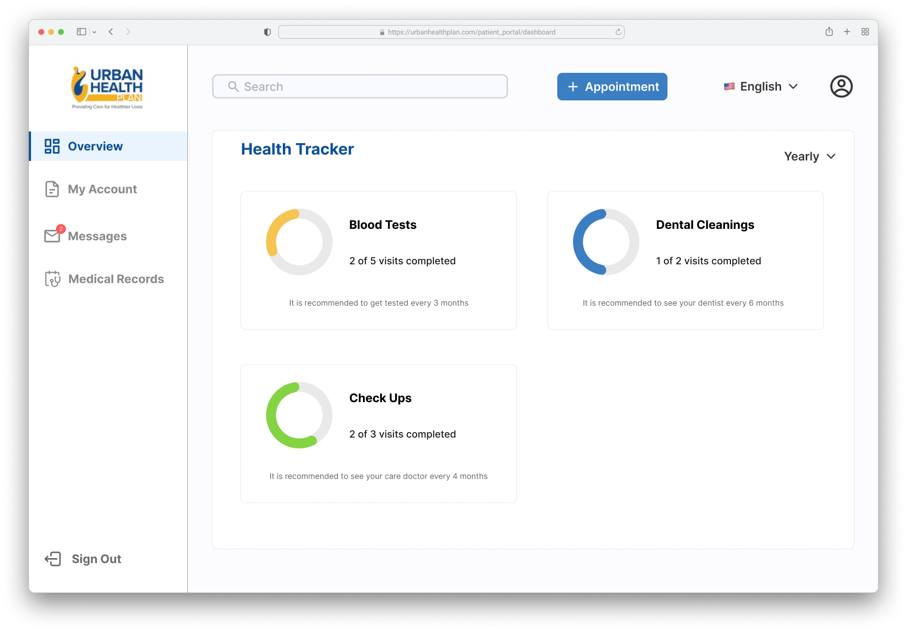
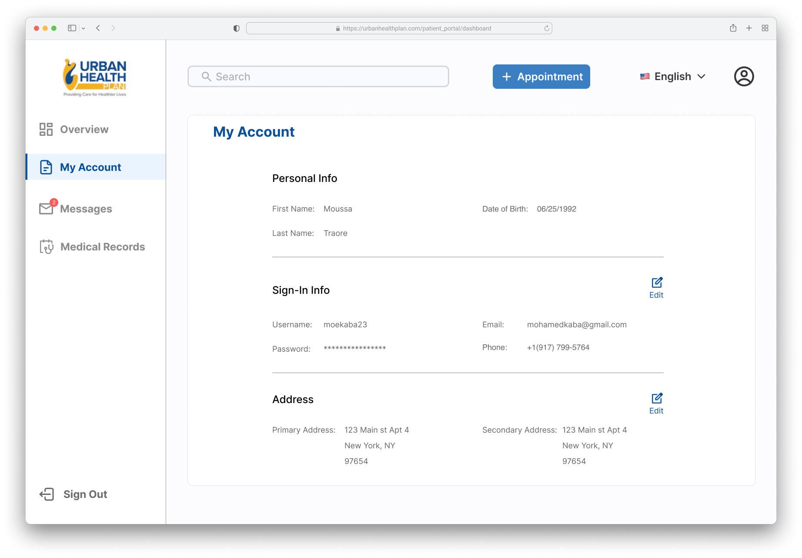
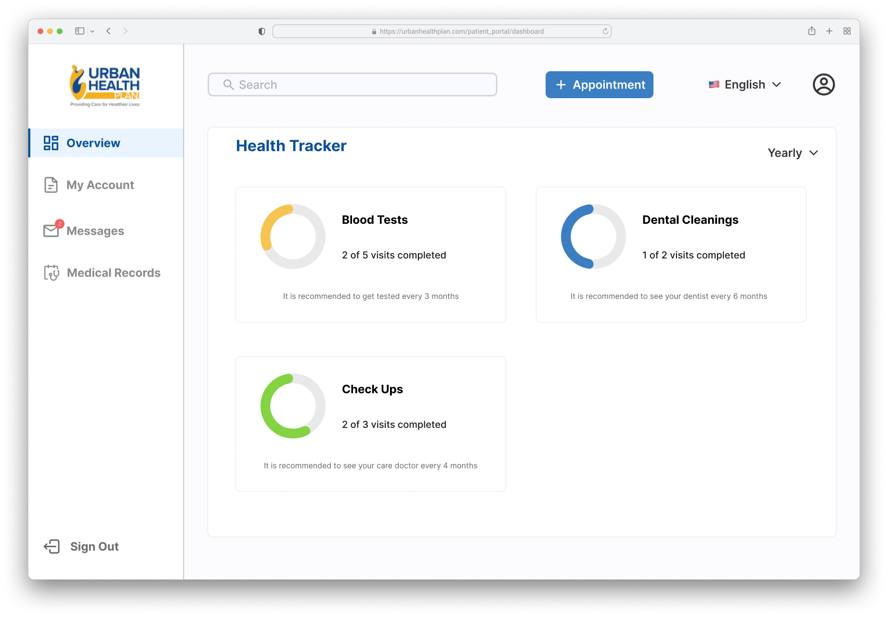
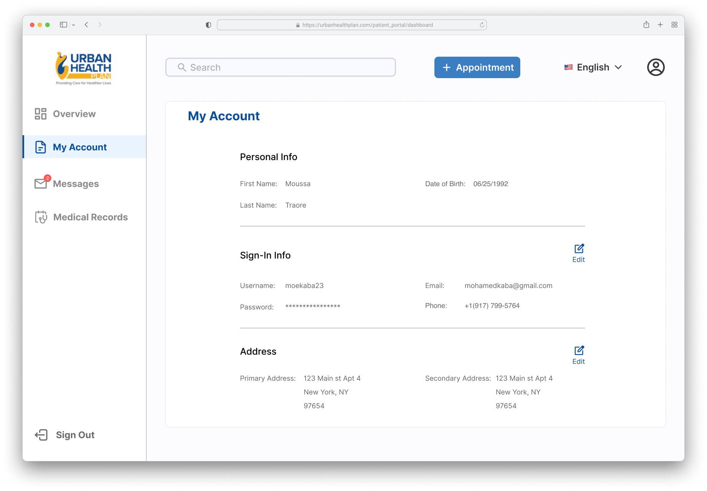
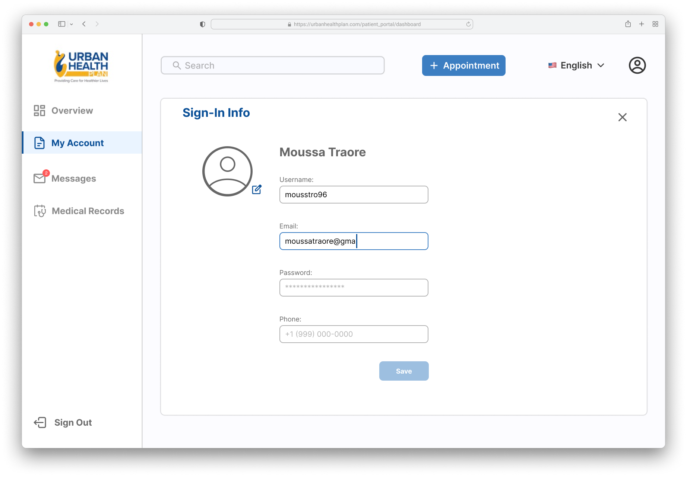
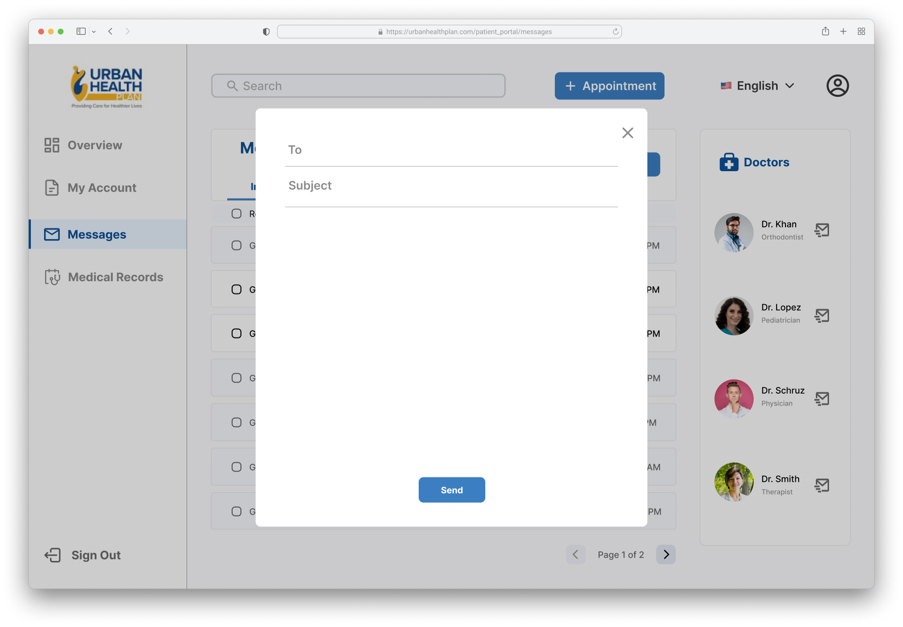
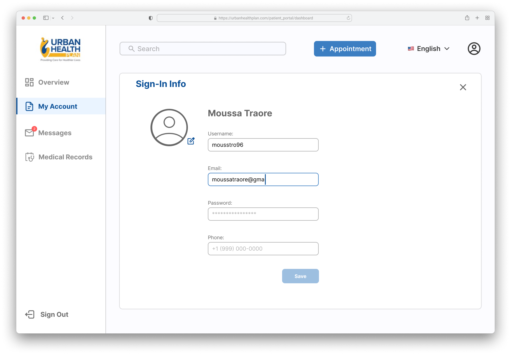
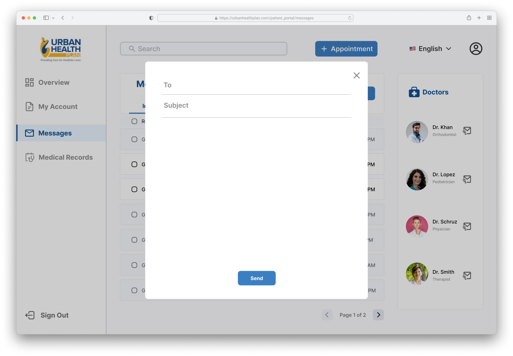

URBAN HEALTH PLAN

Case Study
My Role
UI/UX Designer
Interaction Designer
Duration
3 months
Tools
Figma
Adobe Illustrator
Urban Health Plan is a system of community health centers in New York City. The goal of this project was to revamp their patient web portal and implement new useful features for the end users. I worked with a Product Manager, Engineers and a Researcher on this project.
The Problem
- Outdated and clunky interface.
- Inconsistent design choices.
- Bad information architecture and hierarchy.
The Solution
I embarked on a full redesign of Urban Health Plan's patient web portal. The new design will prioritize a clean and intuitive layout, with easy access to frequently used features and a clear separation of information. By implementing these changes, we aim to increase user satisfaction and task completion rates, as well as improve overall efficiency of the web portal.
Old Web Portal


Design Process

Research
User Interviews
I conducted in person interviews with 6 patients at two different clinic branches. The interview questions will focus on understanding current usage patterns, any specific tasks that are difficult or confusing, and pain points the user encounters while using the web portal. The qualitative data gathered helped us to get an idea of what our users were looking for and to gather as much information from them as possible before moving forward.
A common complaint that surfaced in user interviews was the lack of a feature that allows patients to schedule doctor's appointments online. Currently, patients must either call or visit in-person to schedule appointments. Thus, incorporating an appointment scheduling feature into the web portal is essential.
Information Architecture

Low Fidelity Mockups


Color Palette

Typeface

Components/Design Systems
High Fidelity Screens
 



 




Prototype

Takeaways
I enjoyed conducting user research by doing user interviews and converting the initial concept to designs based on feedback received. Also a prototype was shared with the client and approved after a series of testing with real users.